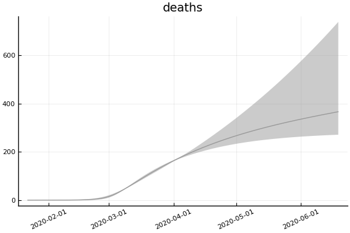
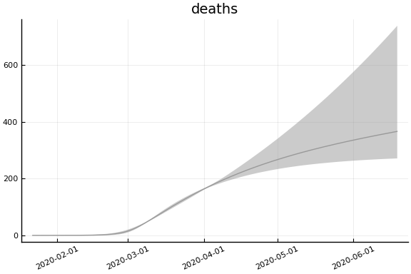

This work is licensed under a Creative Commons Attribution-ShareAlike 4.0 International License
using CovidSEIR, Plots, DataFrames, JLD2, StatsPlots
Plots.pyplot()
jmddir = normpath(joinpath(dirname(Base.find_package("CovidSEIR")),"..","docs","jmd"))
covdf = covidjhudata();
South Korea¶
korea = CountryData(covdf, "Korea, South")
CovidSEIR.CountryData{Float64,Int64}(5.1635256e7, [1, 2, 3, 4, 5, 6, 7, 8,
9, 10 … 69, 70, 71, 72, 73, 74, 75, 76, 77, 78], [0.0, 0.0, 0.0, 0.0, 0.0
, 0.0, 0.0, 0.0, 0.0, 0.0 … 158.0, 162.0, 165.0, 169.0, 174.0, 177.0, 183
.0, 186.0, 192.0, 200.0], [0.0, 0.0, 0.0, 0.0, 0.0, 0.0, 0.0, 0.0, 0.0, 0.0
… 5228.0, 5408.0, 5567.0, 5828.0, 6021.0, 6325.0, 6463.0, 6598.0, 6694.0
, 6776.0], [1.0, 1.0, 2.0, 2.0, 3.0, 4.0, 4.0, 4.0, 4.0, 11.0 … 4275.0, 4
216.0, 4155.0, 3979.0, 3867.0, 3654.0, 3591.0, 3500.0, 3445.0, 3408.0])
using Turing
mdl = CovidSEIR.TimeVarying.countrymodel(korea)
cc = Turing.psample(mdl, NUTS(0.65), 5000, 4)
import JLD2
JLD2.@save "$jmddir/korea_tv_$(Dates.today()).jld2" cc
JLD2.@load "$jmddir/korea_tv_2020-04-09.jld2" cc dayt0;
Estimates¶
plot(cc)

describe(cc)
2-element Array{MCMCChains.ChainDataFrame,1}
Summary Statistics
parameters mean std naive_se mcse ess r_hat
────────── ──────── ──────── ──────── ────── ──────── ──────
a 0.4954 0.2203 0.0017 0.0145 64.2570 1.4955
pE0 0.0000 0.0000 0.0000 0.0000 73.7984 1.2059
p[1] 0.0382 0.0617 0.0005 0.0043 78.2802 1.1632
p[2] 0.0014 0.0007 0.0000 0.0000 64.2570 2.3943
sigC 249.4830 44.4736 0.3516 2.9762 64.2570 1.7494
sigD 7.0278 0.7375 0.0058 0.0298 173.4050 1.0978
sigRc 756.7289 140.4338 1.1102 9.8428 64.2570 2.0736
β[1] 0.6179 0.5052 0.0040 0.0293 71.5561 1.3055
β[2] 0.3807 0.6122 0.0048 0.0350 64.2570 1.3982
β[3] 0.7337 0.4987 0.0039 0.0239 116.3282 1.1583
γ[1] 0.4345 0.4815 0.0038 0.0352 64.2570 2.4452
γ[2] 0.0444 0.0200 0.0002 0.0015 64.2570 2.3413
ρ[1] 0.8318 0.2492 0.0020 0.0153 64.2570 1.4107
ρ[2] 45.3747 9.7411 0.0770 0.6197 64.2570 1.4373
τ 0.1899 0.3263 0.0026 0.0180 87.2755 1.2937
Quantiles
parameters 2.5% 25.0% 50.0% 75.0% 97.5%
────────── ──────── ──────── ──────── ──────── ─────────
a 0.2171 0.3038 0.4594 0.6567 0.9638
pE0 0.0000 0.0000 0.0000 0.0000 0.0000
p[1] 0.0001 0.0002 0.0432 0.0555 0.1144
p[2] 0.0008 0.0008 0.0010 0.0019 0.0028
sigC 182.4047 215.6029 241.2664 280.4259 346.7645
sigD 5.8430 6.5446 6.9404 7.4058 8.8146
sigRc 546.4491 637.6855 747.7038 869.6567 1031.7307
β[1] 0.0407 0.2552 0.4668 0.8947 1.8625
β[2] 0.0000 0.0005 0.0018 0.6110 2.0656
β[3] 0.0331 0.3567 0.6810 1.0008 1.9239
γ[1] 0.0000 0.0005 0.0336 0.8458 1.4127
γ[2] 0.0247 0.0266 0.0345 0.0605 0.0870
ρ[1] 0.1381 0.7267 0.9911 0.9983 0.9999
ρ[2] 37.8295 38.9232 39.8948 51.4316 67.8713
τ 0.0000 0.0000 0.0939 0.2897 0.7369
Fit¶
sdf = simtrajectories(cc, korea, 1:150)
f = plotvars(sdf, korea, dayt0=dayt0)
plot!(f.fit, xlim=nothing)

We see that the model does not fit the rapid drop in new cases in South Korea. This may be caused by the model’s implausible assumption that transmission and testing rates are constant over time.
Implications¶
for fig in f.trajectories
display(plot(fig, xlim=nothing))
end


 
